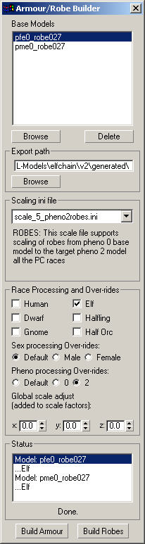

|
Armour and Robe Maker

(example screen shot of parameters used to scale two base pheno-0 elf
models into pheno-2 models)
The process of building armour or robes under this utility will take
you down through each group in the dialog box.
- Base Models - thse are the base models that the utility
will use to build the new models from. They will either be robe or
armour pieces. DO NOT MIX THE TYPES UP. If you do it will all go
horribly wrong. Code will break, the sun wont rise and the sky will
fall on our heads etc. i.e. it will be FUBAR
- Export Path - define where you want to the generated models
to be export to. Important point to note here. The resulting files from
this process are gmax files. This is a deliberate design
decision. You will almost certainly need to perform some level of
tweaking on your scaled models before exporting them to MDL. The
second point is that due to limits within the gmax scripting language I
haven't figured out how to make the file open dialog work with just a
directory selection. So if you use the browse button you will need some
file (say a readme.txt) in the target export dir that you select. Only
the directory part will be used
- Scaling ini file - this is the data file that provides our
scale data. A number are delivered and no doubt some more will be
provided in time. Was you select the ini file the text description
under the drop-down list will change. This tells you what this ini
scale file has been designed to do. If you use it for something
other than it's intended purpose then on your head be it (again think
FUBAR for your results). You will also notice that the Race options
will often change. This indicates what races this scale file by default
is configured to process for. You can deselect races you don't want to
generate output files for
- Race processing and Over-rides - This section allows you to
select which races you want to process for, what sex and what
phenotype overrides you want to activate. The race processing options
are obvious. Select a race to generate models for that race.
Sex Override: Default = use the sex value from the base models; Male =
force all outputs to be male models; Female = force all outputs to be
female models
Pheno Override: Default = use the pheno value from the base models; 0 =
force phenotype 0 (normal); 2 = force phenotype 2 (large)
Global scale adjustment allows x,y,z values from 0 to 1 to be added to
the scale factors used. Adding a value of one is like changing a
scale matrix of [1,1,1] to [2,2,2]. This would make the resulting piece
200% normal size
- Status - this just provides some status information of what
was processed
Warning: Selecting the
correct scale file is crucial
to getting expected results.
General Comments
NWmax Armour & Robe Maker is not a silver bullet. To get best
results you will need to bear certain things in mind. The key ones
being:
- The scale data has been developed using two sources. [1]
the Bioware robe model robe003 and a series of "manakin" models built
from the 001 armour parts. You should
use one of these as the underlying skeleton for your robe. The scale
data works best if the starting dimensions of the underlying skeleton
is exactly the same as what the original scale data was developed from
- The scale data is designed to scale from a human model to
the other races, it will not work from say Elf to other races
- The modeler should develop four base human models pmh0,
pmh2, pfh0, pfh0, pfh2
- A scaler will NOT give as good results as a hand crafted
model, but it WILL save you massive amounts of time
- After any scaling exercise you should check your models and
perform hand corrections you feel are necessary
- A key element to robe development is the placement of the
pivot points. Due to the way the robe system works these pivots need to
be in the same place for both phenotypes for a race. Load in the
super models pmh0, pme0 etc to see what I mean. These models contain
dummy nodes that show where each the of the body parts pivots should
be centered to
|
|